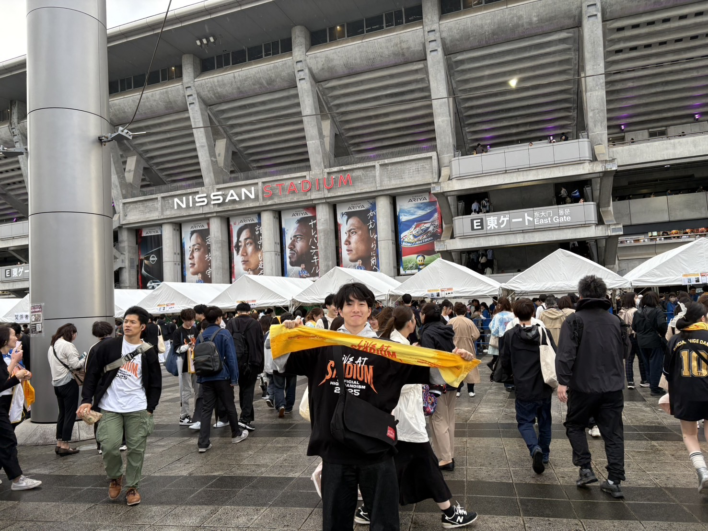

<!doctype html>
<html lang="ja" data-theme="dark">
<head>
  <meta charset="utf-8" />
  <meta name="viewport" content="width=device-width, initial-scale=1" />
  <title>About — R. Matsuba</title>
  <link rel="preconnect" href="https://fonts.googleapis.com" />
  <link rel="preconnect" href="https://fonts.gstatic.com" crossorigin />
  <link rel="stylesheet" href="styles.css" />
  <script src="https://unpkg.com/react@18.3.1/umd/react.development.js" integrity="sha384-hD6/rw4ppMLGNu3tX5cjIb+uRZ7UkRJ6BPkLpg4hAu/6onKUg4lLsHAs9EBPT82L" crossorigin="anonymous"></script>
  <script src="https://unpkg.com/react-dom@18.3.1/umd/react-dom.development.js" integrity="sha384-u6aeetuaXnQ38mYT8rp6sbXaQe3NL9t+IBXmnYxwkUI2Hw4bsp2Wvmx4yRQF1uAm" crossorigin="anonymous"></script>
  <script src="https://unpkg.com/@babel/standalone@7.29.0/babel.min.js" integrity="sha384-m08KidiNqLdpJqLq95G/LEi8Qvjl/xUYll3QILypMoQ65QorJ9Lvtp2RXYGBFj1y" crossorigin="anonymous"></script>
</head>
<body>
  <div id="root"></div>
  <script type="text/babel" src="tweaks-panel.jsx"></script>
  <script type="text/babel" src="shared.jsx"></script>
  <script type="text/babel" src="page-app.jsx"></script>
  <script type="text/babel">

const { useRef } = React;

/* ── Data ── */
const techGroups = [
  {
    cat: "Languages",
    items: ["C", "C++", "JavaScript", "TypeScript", "Rust", "Bash", "HTML5", "CSS3"],
  },
  {
    cat: "Frameworks & Libraries",
    items: ["React", "Vite", "Hono", "Tailwind CSS", "Fastify", "Babylon.js", "Three.js", "Zod"],
  },
  {
    cat: "Infrastructure & Environments",
    items: ["Linux", "Docker", "Ubuntu", "Nginx", "Node.js", "Bun", "Cloudflare", "SQLite", "Supabase"],
  },
  {
    cat: "Tooling & Workflows",
    items: ["Git", "GitHub", "GitHub Actions", "Neovim", "Vim", "Biome", "Turborepo", "Figma", "Notion"],
  },
];

/* ── About Page ── */
function AboutPage() {
  const profileRef = useReveal(0.1);
  const researchRef = useReveal(0.1);
  const codingRef = useReveal(0.1);
  const booksRef = useReveal(0.1);

  return (
    <div style={{ maxWidth: 1320, margin: "0 auto", padding: "0 40px" }}>

      {/* Page header */}
      <header style={{ paddingTop: 160, paddingBottom: 80 }}>
        <div className="mono accent" style={{ fontSize: 11, letterSpacing: "0.3em", textTransform: "uppercase", marginBottom: 20 }}>
          fol. 002 / About Me
        </div>
        <h1 className="latin" style={{ fontSize: "clamp(56px, 8vw, 120px)", fontWeight: 200, lineHeight: 0.92, margin: 0, letterSpacing: "-0.025em" }}>
          <KineticText text="De auctore." by="word" step={80} delay={200} />
        </h1>
        <div style={{ width: "100%", height: 1, background: "var(--rule)", marginTop: 48 }} className="rule-draw in" />
      </header>

      {/* Profile */}
      <section ref={profileRef} className="rv" style={{ marginBottom: 140 }}>
        <div style={{ display: "grid", gridTemplateColumns: "300px 1fr", gap: 80, alignItems: "start" }}>
          <div>
            <div style={{ border: "1px solid var(--rule)", padding: 10, background: "var(--bg-elev)" }}>
              
            </div>
            <div className="mono muted" style={{ marginTop: 10, fontSize: 10, letterSpacing: "0.25em", textTransform: "uppercase", textAlign: "center" }}>
              fig. 01 · selfportrait
            </div>
            <dl style={{ marginTop: 32, display: "grid", gridTemplateColumns: "1fr", gap: "12px 0" }}>
              {[
                ["Name",    "Ryutaro Matsuba — 松場 龍太郎"],
                ["Role",    "Univ. Student · 東京理科大学 4年"],
                ["Contact", "mrworks15@icloud.com"],
                ["GitHub",  "ryutaro3215"],
              ].map(([k, v]) => (
                <div key={k}>
                  <div className="mono muted" style={{ fontSize: 9, letterSpacing: "0.3em", textTransform: "uppercase", marginBottom: 3 }}>{k}</div>
                  <div style={{ fontSize: 12, lineHeight: 1.5 }}>{v}</div>
                </div>
              ))}
            </dl>
          </div>
          <div>
            <p className="accent mono" style={{ fontSize: 11, letterSpacing: "0.25em", textTransform: "uppercase", marginBottom: 20 }}>
              ¹ profile
            </p>
            <p style={{ fontSize: 20, lineHeight: 1.8, margin: "0 0 22px", fontStyle: "italic", fontWeight: 300, paddingLeft: 22, borderLeft: "1px solid var(--accent)" }}>
              東京理科大学経営学部経営学科に所属する大学4年。趣味は読書、書店巡り、好きなアーティストのライブに足を運ぶこと、そして美味しいものを食べること。
            </p>
            <p style={{ fontSize: 15, lineHeight: 1.9, margin: "0 0 16px", paddingLeft: 22 }}>
              好奇心が強く、気になったこと・知りたいことを片端から調べてしまう性分で、読む本のジャンルも社会科学と人文学を軸に多岐にわたる。
            </p>
            <p style={{ fontSize: 15, lineHeight: 1.9, margin: "0 0 16px", paddingLeft: 22 }}>
              このノートは、私自身が考えたこと・疑問に思ったこと・学んだことの備忘録として綴っている。自分の書きたいことを優先しつつ、読んでくださる方にも何か小さな価値を感じていただけるよう心がけている。
            </p>
          </div>
        </div>
      </section>

      {/* Research */}
      <section ref={researchRef} id="research" className="rv" style={{ marginBottom: 140 }}>
        <AboutSectionHead num="§ 01" label="Research" />
        <div style={{ display: "grid", gridTemplateColumns: "1fr 1fr", gap: 80, marginTop: 56 }}>
          <div>
            <p style={{ fontSize: 15, lineHeight: 1.95, marginBottom: 22 }}>
              現在大学では経営学における
              <strong style={{ color: "var(--ink)" }}>経営組織・経営管理・経営戦略論</strong>
              を専門として勉強しています。
            </p>
            <p style={{ fontSize: 15, lineHeight: 1.95, marginBottom: 22 }}>
              卒業研究では主に組織の中における人材の多様性と組織の知の関係性をテーマとしており、具体的には個人内の多様性である
              <strong style={{ color: "var(--ink)" }}>イントラパーソナルダイバーシティ</strong>
              と
              <strong style={{ color: "var(--ink)" }}>認知的柔軟性</strong>
              の関連性についての研究を行なっています。
            </p>
            <p style={{ fontSize: 15, lineHeight: 1.95 }}>
              大学院ではこのテーマから発展させ引き続き研究を進めて行く予定です。
            </p>
          </div>
          <div>
            <div style={{ border: "1px solid var(--rule)", padding: "24px 28px" }}>
              <div className="mono muted" style={{ fontSize: 10, letterSpacing: "0.25em", textTransform: "uppercase", marginBottom: 16, paddingBottom: 12, borderBottom: "1px solid var(--rule-soft)" }}>
                Research Keywords
              </div>
              {[
                ["Field",      "Management · Organization Science"],
                ["Theme",      "Intrapersonal Diversity"],
                ["Focus",      "Cognitive Flexibility"],
                ["Method",     "Empirical · Survey study"],
                ["Status",     "Undergrad thesis → M.A. plan"],
                ["Lab",        "東京理科大学 経営学部"],
              ].map(([k, v]) => (
                <div key={k} style={{ display: "grid", gridTemplateColumns: "120px 1fr", gap: "6px 16px", marginBottom: 10 }}>
                  <span className="mono muted" style={{ fontSize: 10, letterSpacing: "0.2em", textTransform: "uppercase", paddingTop: 3 }}>{k}</span>
                  <span style={{ fontSize: 13, lineHeight: 1.6 }}>{v}</span>
                </div>
              ))}
            </div>
          </div>
        </div>
      </section>

      {/* Coding */}
      <section ref={codingRef} id="coding" className="rv" style={{ marginBottom: 140 }}>
        <AboutSectionHead num="§ 02" label="Coding" />
        <p style={{ maxWidth: 660, fontSize: 15, lineHeight: 1.9, marginTop: 56, marginBottom: 48 }}>
          <a href="https://42tokyo.jp/" style={{ color: "var(--accent)", textDecoration: "underline" }}>42Tokyo</a>
          というエンジニア養成機関を卒業（23年8月入学 → 26年1月修了）。完全初学者からC言語を通じてコンピュータサイエンスの基礎を習得し、同時に基本情報技術者試験も一発で合格。個人ではTypeScriptをはじめReact・Hono・Rust などを学習中。
        </p>
        <div style={{ display: "grid", gridTemplateColumns: "1fr 1fr", gap: 24 }}>
          {techGroups.map((g) => (
            <TechBlock key={g.cat} cat={g.cat} items={g.items} />
          ))}
        </div>
      </section>

      {/* Books */}
      <section ref={booksRef} id="books" className="rv" style={{ marginBottom: 180 }}>
        <AboutSectionHead num="§ 03" label="Books" />
        <div style={{ display: "grid", gridTemplateColumns: "1fr 1fr", gap: 80, marginTop: 56 }}>
          <div>
            <p style={{ fontSize: 15, lineHeight: 1.9, marginBottom: 18 }}>
              読書にハマったのは大学入学後。元々知的好奇心が強く、気になった本を片端から読んでいたら4年で大体
              <strong style={{ color: "var(--ink)", fontSize: 17 }}> 350冊</strong>
              ほどになっていました。
            </p>
            <p style={{ fontSize: 15, lineHeight: 1.9, marginBottom: 18 }}>
              特によく読むジャンルは<strong style={{ color: "var(--ink)" }}>経営学・歴史・思想・哲学・コンピュータサイエンス</strong>。
              新書が好きで、特に<strong style={{ color: "var(--ink)" }}>岩波新書</strong>と<strong style={{ color: "var(--ink)" }}>講談社現代新書</strong>を愛読しています。
            </p>
            <p style={{ fontSize: 15, lineHeight: 1.9 }}>
              週に一度は必ず書店に行って棚をひたすら眺めています。
              <a href="Library.html" style={{ color: "var(--accent)", textDecoration: "underline" }}>Library ページ</a>
              にこれまで読んだ書籍を本棚として置いており、Book reviewはBlogで書いています。
            </p>
          </div>
          <div>
            {[
              { label: "Total read",  value: "≈ 350",    sub: "volumes" },
              { label: "Per year",    value: "≈ 90",     sub: "volumes / yr" },
              { label: "Fav. label",  value: "岩波",     sub: "Iwanami Shinsho" },
              { label: "Fav. label",  value: "講談社",   sub: "Kodansha Gendai" },
            ].map((item, i) => (
              <div key={i} style={{ display: "flex", justifyContent: "space-between", alignItems: "baseline", padding: "20px 0", borderBottom: "1px solid var(--rule-soft)" }}>
                <span className="mono muted" style={{ fontSize: 11, letterSpacing: "0.2em", textTransform: "uppercase" }}>{item.label}</span>
                <div style={{ textAlign: "right" }}>
                  <span className="latin" style={{ fontSize: 32, fontStyle: "italic", fontWeight: 200, color: "var(--accent)" }}>{item.value}</span>
                  <span className="mono muted" style={{ fontSize: 10, marginLeft: 8 }}>{item.sub}</span>
                </div>
              </div>
            ))}
            <div style={{ marginTop: 32 }}>
              <a href="Library.html" style={{ display: "inline-flex", alignItems: "center", gap: 10, fontFamily: "var(--mono)", fontSize: 11, letterSpacing: "0.28em", textTransform: "uppercase", color: "var(--accent)" }}>
                Open Library <span>→</span>
              </a>
            </div>
          </div>
        </div>
      </section>

    </div>
  );
}

function AboutSectionHead({ num, label }) {
  const refRule = useReveal(0.1);
  return (
    <div>
      <div style={{ display: "flex", alignItems: "baseline", gap: 20, marginBottom: 0 }}>
        <span className="mono accent" style={{ fontSize: 11, letterSpacing: "0.3em", textTransform: "uppercase" }}>{num}</span>
        <h2 className="latin" style={{ fontSize: "clamp(40px, 5vw, 72px)", fontWeight: 200, fontStyle: "italic", letterSpacing: "-0.02em", lineHeight: 1, margin: 0 }}>{label}</h2>
      </div>
      <div ref={refRule} className="rv rule-draw" style={{ marginTop: 20 }} />
    </div>
  );
}

function TechBlock({ cat, items }) {
  const ref = useReveal(0.1);
  return (
    <div ref={ref} className="rv" style={{ border: "1px solid var(--rule)", padding: "22px 24px" }}>
      <div className="mono muted" style={{ fontSize: 10, letterSpacing: "0.28em", textTransform: "uppercase", marginBottom: 16, paddingBottom: 12, borderBottom: "1px solid var(--rule-soft)" }}>
        {cat}
      </div>
      <div style={{ display: "flex", flexWrap: "wrap", gap: "8px 12px" }}>
        {items.map((item) => (
          <span key={item} className="mono" style={{ fontSize: 12, color: "var(--ink)", letterSpacing: "0.04em", padding: "4px 10px", border: "1px solid var(--rule-soft)", borderRadius: 2 }}>
            {item}
          </span>
        ))}
      </div>
    </div>
  );
}

/* ── Mount ── */
function App() {
  return (
    <PageApp>
      <AboutPage />
    </PageApp>
  );
}

ReactDOM.createRoot(document.getElementById("root")).render(<App />);
  </script>

  <style>
    @media (max-width: 820px) {
      /* Stack 2-col grids on mobile */
    }
  </style>
</body>
</html>
